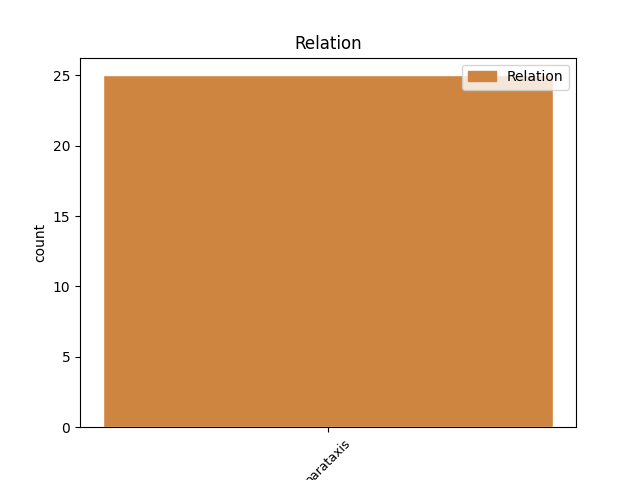
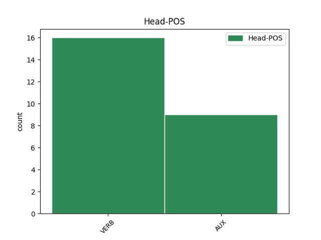
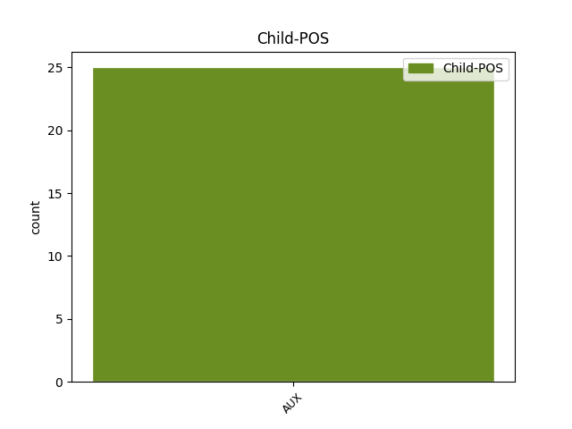

Distribution of features within this leaf



Agreement Rules sorted by frequency.
- When the dependent token is the parataxis(parataxis) of the head token, and the dependent token is AUX.
1 Han haber AUX AUX Mood=Ind|Number=Plur|Person=3|Tense=Pres|VerbForm=Fin 17 parataxis _ _
2 fallado _ _ _ _ 0 _ _ _
3 las _ _ _ _ 0 _ _ _
4 formas _ _ _ _ 0 _ _ _
5 diplomáticas _ _ _ _ 0 _ _ _
6 y _ _ _ _ 0 _ _ _
7 hay _ _ _ _ 0 _ _ _
8 que _ _ _ _ 0 _ _ _
9 cambiar _ _ _ _ 0 _ _ _
10 las _ _ _ _ 0 _ _ _
11 una _ _ _ _ 0 _ _ _
12 retirada _ _ _ _ 0 _ _ _
13 a _ _ _ _ 0 _ _ _
14 tiempo _ _ _ _ 0 _ _ _
15 no _ _ _ _ 0 _ _ _
16 siempre _ _ _ _ 0 _ _ _
17 es ser AUX AUX Mood=Ind|Number=Sing|Person=3|Tense=Pres|VerbForm=Fin 0 _ _ _
18 una _ _ _ _ 0 _ _ _
19 victoria _ _ _ _ 0 _ _ _
20 , _ _ _ _ 0 _ _ _
21 máxime _ _ _ _ 0 _ _ _
22 cuando _ _ _ _ 0 _ _ _
23 se _ _ _ _ 0 _ _ _
24 estuvo _ _ _ _ 0 _ _ _
25 predicando _ _ _ _ 0 _ _ _
26 durante _ _ _ _ 0 _ _ _
27 meses _ _ _ _ 0 _ _ _
28 la _ _ _ _ 0 _ _ _
29 guerra _ _ _ _ 0 _ _ _
30 santa _ _ _ _ 0 _ _ _
31 contra _ _ _ _ 0 _ _ _
32 la _ _ _ _ 0 _ _ _
33 pérfida _ _ _ _ 0 _ _ _
34 Alemania _ _ _ _ 0 _ _ _
35 y _ _ _ _ 0 _ _ _
36 su _ _ _ _ 0 _ _ _
37 manía _ _ _ _ 0 _ _ _
38 de _ _ _ _ 0 _ _ _
39 resistir _ _ _ _ 0 _ _ _
40 se _ _ _ _ 0 _ _ _
41 a _ _ _ _ 0 _ _ _
42 mantener _ _ _ _ 0 _ _ _
43 los _ _ _ _ 0 _ _ _
44 fondos _ _ _ _ 0 _ _ _
45 estructurales _ _ _ _ 0 _ _ _
46 y _ _ _ _ 0 _ _ _
47 de _ _ _ _ 0 _ _ _
48 cohesión _ _ _ _ 0 _ _ _
49 para _ _ _ _ 0 _ _ _
50 España _ _ _ _ 0 _ _ _
51 hasta _ _ _ _ 0 _ _ _
52 pasado _ _ _ _ 0 _ _ _
53 el _ _ _ _ 0 _ _ _
54 2006 _ _ _ _ 0 _ _ _
55 . _ _ _ _ 0 _ _ _
Disagree Examples:
1 Se _ _ _ _ 0 _ _ _
2 realizaron realizar VERB VERB Mood=Ind|Number=Plur|Person=3|Tense=Past|VerbForm=Fin 0 _ _ _
3 también _ _ _ _ 0 _ _ _
4 medidas _ _ _ _ 0 _ _ _
5 de _ _ _ _ 0 _ _ _
6 la _ _ _ _ 0 _ _ _
7 energía _ _ _ _ 0 _ _ _
8 solar _ _ _ _ 0 _ _ _
9 captada _ _ _ _ 0 _ _ _
10 por _ _ _ _ 0 _ _ _
11 el _ _ _ _ 0 _ _ _
12 planeta _ _ _ _ 0 _ _ _
13 ( _ _ _ _ 0 _ _ _
14 hay haber AUX AUX Mood=Ind|Number=Sing|Person=3|Tense=Pres|VerbForm=Fin 2 parataxis _ _
15 que _ _ _ _ 0 _ _ _
16 tener _ _ _ _ 0 _ _ _
17 en _ _ _ _ 0 _ _ _
18 cuenta _ _ _ _ 0 _ _ _
19 que _ _ _ _ 0 _ _ _
20 la _ _ _ _ 0 _ _ _
21 luz _ _ _ _ 0 _ _ _
22 que _ _ _ _ 0 _ _ _
23 llega _ _ _ _ 0 _ _ _
24 a _ _ _ _ 0 _ _ _
25 Urano _ _ _ _ 0 _ _ _
26 procedente _ _ _ _ 0 _ _ _
27 de _ _ _ _ 0 _ _ _
28 nuestra _ _ _ _ 0 _ _ _
29 estrella _ _ _ _ 0 _ _ _
30 es _ _ _ _ 0 _ _ _
31 1.600 _ _ _ _ 0 _ _ _
32 veces _ _ _ _ 0 _ _ _
33 más _ _ _ _ 0 _ _ _
34 débil _ _ _ _ 0 _ _ _
35 que _ _ _ _ 0 _ _ _
36 la _ _ _ _ 0 _ _ _
37 que _ _ _ _ 0 _ _ _
38 incide _ _ _ _ 0 _ _ _
39 sobre _ _ _ _ 0 _ _ _
40 la _ _ _ _ 0 _ _ _
41 Tierra _ _ _ _ 0 _ _ _
42 ) _ _ _ _ 0 _ _ _
43 . _ _ _ _ 0 _ _ _
1 Pero _ _ _ _ 0 _ _ _
2 el _ _ _ _ 0 _ _ _
3 England _ _ _ _ 0 _ _ _
4 United _ _ _ _ 0 _ _ _
5 , _ _ _ _ 0 _ _ _
6 como _ _ _ _ 0 _ _ _
7 se _ _ _ _ 0 _ _ _
8 ha haber AUX AUX Mood=Ind|Number=Sing|Person=3|Tense=Pres|VerbForm=Fin 0 _ _ _
9 bautizado _ _ _ _ 0 _ _ _
10 a _ _ _ _ 0 _ _ _
11 la _ _ _ _ 0 _ _ _
12 selección _ _ _ _ 0 _ _ _
13 inglesa _ _ _ _ 0 _ _ _
14 debido _ _ _ _ 0 _ _ _
15 a _ _ _ _ 0 _ _ _
16 su _ _ _ _ 0 _ _ _
17 dependencia _ _ _ _ 0 _ _ _
18 del _ _ _ _ 0 _ _ _
19 Manchester _ _ _ _ 0 _ _ _
20 United _ _ _ _ 0 _ _ _
21 - _ _ _ _ 0 _ _ _
22 - _ _ _ _ 0 _ _ _
23 cinco _ _ _ _ 0 _ _ _
24 de _ _ _ _ 0 _ _ _
25 sus _ _ _ _ 0 _ _ _
26 jugadores _ _ _ _ 0 _ _ _
27 fueron ser AUX AUX Mood=Ind|Number=Plur|Person=3|Tense=Past|VerbForm=Fin 8 parataxis _ _
28 titulares _ _ _ _ 0 _ _ _
29 - _ _ _ _ 0 _ _ _
30 - _ _ _ _ 0 _ _ _
31 , _ _ _ _ 0 _ _ _
32 sólo _ _ _ _ 0 _ _ _
33 contagió _ _ _ _ 0 _ _ _
34 ilusión _ _ _ _ 0 _ _ _
35 cuando _ _ _ _ 0 _ _ _
36 España _ _ _ _ 0 _ _ _
37 decidió _ _ _ _ 0 _ _ _
38 desconectar _ _ _ _ 0 _ _ _
39 se _ _ _ _ 0 _ _ _
40 del _ _ _ _ 0 _ _ _
41 partido _ _ _ _ 0 _ _ _
42 . _ _ _ _ 0 _ _ _
1 Para _ _ _ _ 0 _ _ _
2 mayor _ _ _ _ 0 _ _ _
3 confusión _ _ _ _ 0 _ _ _
4 - _ _ _ _ 0 _ _ _
5 - _ _ _ _ 0 _ _ _
6 ¿ _ _ _ _ 0 _ _ _
7 o _ _ _ _ 0 _ _ _
8 es ser AUX AUX Mood=Ind|Number=Sing|Person=3|Tense=Pres|VerbForm=Fin 32 parataxis _ _
9 deliberado _ _ _ _ 0 _ _ _
10 ? _ _ _ _ 0 _ _ _
11 - _ _ _ _ 0 _ _ _
12 - _ _ _ _ 0 _ _ _
13 , _ _ _ _ 0 _ _ _
14 el _ _ _ _ 0 _ _ _
15 repartidor _ _ _ _ 0 _ _ _
16 de _ _ _ _ 0 _ _ _
17 esa _ _ _ _ 0 _ _ _
18 torna _ _ _ _ 0 _ _ _
19 , _ _ _ _ 0 _ _ _
20 que _ _ _ _ 0 _ _ _
21 la _ _ _ _ 0 _ _ _
22 oposición _ _ _ _ 0 _ _ _
23 considera _ _ _ _ 0 _ _ _
24 una _ _ _ _ 0 _ _ _
25 descarada _ _ _ _ 0 _ _ _
26 paga _ _ _ _ 0 _ _ _
27 extra _ _ _ _ 0 _ _ _
28 electoral _ _ _ _ 0 _ _ _
29 para _ _ _ _ 0 _ _ _
30 jubilados _ _ _ _ 0 _ _ _
31 , _ _ _ _ 0 _ _ _
32 será ser AUX AUX Mood=Ind|Number=Sing|Person=3|Tense=Fut|VerbForm=Fin 0 _ _ _
33 Benestar _ _ _ _ 0 _ _ _
34 Social _ _ _ _ 0 _ _ _
35 . _ _ _ _ 0 _ _ _
1 Y _ _ _ _ 0 _ _ _
2 mientras _ _ _ _ 0 _ _ _
3 el _ _ _ _ 0 _ _ _
4 Gobierno _ _ _ _ 0 _ _ _
5 de _ _ _ _ 0 _ _ _
6 Madrid _ _ _ _ 0 _ _ _
7 llamaba llamar VERB VERB Mood=Ind|Number=Sing|Person=3|Tense=Imp|VerbForm=Fin 0 _ _ _
8 inútilmente _ _ _ _ 0 _ _ _
9 en _ _ _ _ 0 _ _ _
10 puertas _ _ _ _ 0 _ _ _
11 supuestamente _ _ _ _ 0 _ _ _
12 amigas _ _ _ _ 0 _ _ _
13 ( _ _ _ _ 0 _ _ _
14 Francia _ _ _ _ 0 _ _ _
15 fue ser AUX AUX Mood=Ind|Number=Sing|Person=3|Tense=Past|VerbForm=Fin 7 parataxis _ _
16 un _ _ _ _ 0 _ _ _
17 caso _ _ _ _ 0 _ _ _
18 paradigmático _ _ _ _ 0 _ _ _
19 ) _ _ _ _ 0 _ _ _
20 , _ _ _ _ 0 _ _ _
21 las _ _ _ _ 0 _ _ _
22 otras _ _ _ _ 0 _ _ _
23 puertas _ _ _ _ 0 _ _ _
24 , _ _ _ _ 0 _ _ _
25 las _ _ _ _ 0 _ _ _
26 ajenas _ _ _ _ 0 _ _ _
27 , _ _ _ _ 0 _ _ _
28 se _ _ _ _ 0 _ _ _
29 iban _ _ _ _ 0 _ _ _
30 cerrando _ _ _ _ 0 _ _ _
31 paulatinamente _ _ _ _ 0 _ _ _
32 . _ _ _ _ 0 _ _ _